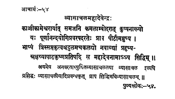

54. आचार्य - 54 - व्यासाचलमहादेवेन्द्रः
काञ्चीकामेश्वरार्या ••• सिद्धिम् ॥ १०७ ॥
अयमनवर ••• साचलम् ॥
Born as the son of Kāmeśvara and Kamalāmbā of Kāñci, the one named Kupanna who having received the initiation and preceptor-ship with the name Mahādeva, conducted the lectures on Bhāṣya ably for twenty-one times in nine years rejoicingly, attained siddhi on the pratipad of black fortnight in the month of Āṣāḍha of the year Akṣaya.
As he stayed ever in the Vyāsācala, he is known as Vyāsācala and the author of Vyāsācaliya and other works. He attained siddhi in Vyāsācala.
